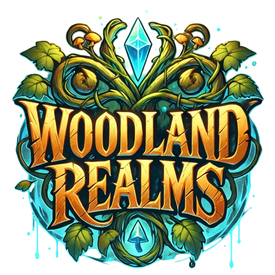
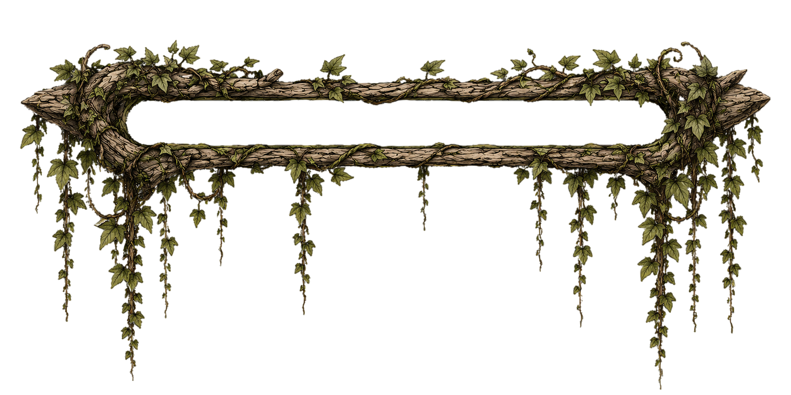

Server voting
Voting links can be added when Woodland Realms is listed on the server networks you choose.

Entering the realm

Vote • Support
Official community links, server listings, project pages, voting destinations, and future support options belong here in one safe, easy-to-update place.
Future support systems
Voting links can be added when Woodland Realms is listed on the server networks you choose.
Optional supporter perks or donations can be added later only when the server economy and policies are ready.
A future store can connect to cosmetics or supporter items without changing the current fantasy frontend.